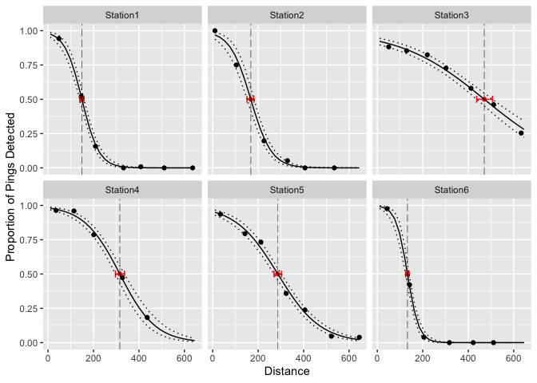

detrange estimates detection range from multiple stations within a passive acoustic telemetry array. We use the definition of detection range from Kessel et al. (2014):
“… the relationship between detection probability and the distance between the receiver and tag. This can be presented graphically in the form of a logistic curve of detection probability, derived from the results of detection range testing in the field.”
Given the detection range, detrange also estimates the distance (with confidence intervals) at which a specified level of detection efficiency is achieved. Typically, we are interested in the midpoint of the detection range (i.e. distance at which 50% of pings are detected).
Under the hood, detrange uses a Bayesian mixed-effects logistic linear regression model. Station is treated as a random effect (slope and intercept) and Distance is the sole covariate.
detrange expects data typical of detection range testing. These data must include columns:
Station (factor)Distance (numeric)Detects (integer)Pings (integer)Pings is the expected number of detections. An example dataset range_test is included for reference.
library(detrange)
#> Loading required package: mbr
#> Registered S3 method overwritten by 'mbr':
#> method from
#> pars.character term
#> Loading required package: jmbr
### view example dataset
data <- range_test
data
#> # A tibble: 38 × 4
#> Station Distance Detects Pings
#> <fct> <dbl> <int> <int>
#> 1 Station1 48 98 104
#> 2 Station1 146 72 138
#> 3 Station1 209 28 178
#> 4 Station1 332 0 55
#> 5 Station1 408 1 119
#> 6 Station1 511 0 154
#> 7 Station1 636 0 85
#> 8 Station2 10 71 71
#> 9 Station2 104 39 52
#> 10 Station2 226 28 142
#> # … with 28 more rowsTo estimate detection range, use dr_analyse(). The priors argument allows the user to change the default priors (in JAGS language), de_target specifies the desired detection efficiency to estimate distance at and nthin can be adjusted to improve model convergence. Note a single prior can be changed and the default priors will remain for the rest.
### set target DE to 50%
de_target <- 0.5
### replace default prior for bIntercept
prior_bIntercept <- list(bIntercept = "dnorm(10, 5^-2)")
analysis <- dr_analyse(data, de_target = de_target, priors = prior_bIntercept, nthin = 1L)
#> Registered S3 method overwritten by 'rjags':
#> method from
#> as.mcmc.list.mcarray mcmcr
#> # A tibble: 1 × 8
#> n K nchains niters nthin ess rhat converged
#> <int> <int> <int> <int> <int> <int> <dbl> <lgl>
#> 1 38 4 3 1000 1 33 2.62 FALSEThe output of dr_analyse() is an object of class mbr. It can be manipulated using any functions within the mbr package. For convenience, detrange provides some functions to summarise/visualise the analysis.
### plot predicted values
dr_plot_predicted(analysis, de_target = de_target)
### get midpoint estimates
dr_analysis_midpoint(analysis)
#> # A tibble: 6 × 5
#> Station estimate lower upper svalue
#> <fct> <dbl> <dbl> <dbl> <dbl>
#> 1 Station1 149. 140. 158. 11.6
#> 2 Station2 168. 151. 182. 11.6
#> 3 Station3 471. 437. 507. 11.6
#> 4 Station4 316. 296. 336. 11.6
#> 5 Station5 287. 270. 302. 11.6
#> 6 Station6 133. 124. 140. 11.6
### coefficient table
dr_analysis_coef(analysis)
#> # A tibble: 4 × 6
#> term estimate lower upper svalue description
#> <term> <dbl> <dbl> <dbl> <dbl> <chr>
#> 1 bIntercept 3.80 2.89 5.67 11.6 "Intercept of logit(`eDetect…
#> 2 bMidpoint 265. 190. 317. 11.6 "Intercept of logit(`eDetect…
#> 3 sInterceptStation 1.15 0.540 2.79 11.6 "Standard deviation of `bInt…
#> 4 sMidpointStation 124. 77.6 204. 11.6 "Standard deviation of `bMid…Please note that the detrange project is released with a Contributor Code of Conduct. By contributing to this project, you agree to abide by its terms.
Install the development version from GitHub with:
# install.packages("devtools")
devtools::install_github("Freshwater-Fish-Ecology-Laboratory/detrange")